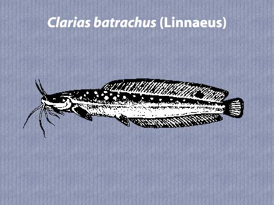

|
DIGITISED INVENTORY OF FRESHWATER FINFISHES AND SHELL FISHES OF INDIA |
Clarias batrachus
Taxonomic
Details
----- Valid Name
----- Classification
----- Synonyms
----- Common Names
Other
Biological Details
----- Habit and
Habitat
----- Morphological
Features
----- Reproductive
Biology
---------- Breeding
season
---------- Breeding techinique
---------- Fishing methods
----- Biology
Stages of development:
Economic
Importance
----- Uses
----- Parts Used
Economic potenial to the country
----- ----- Fishery statistics
Miscellaneous Information
Literature
Name : Clarias batrachus (Linnaeus),1758

Family : Clariidae
Classification:
Phylum: Chordata Subphylum: Vertebrata
Class: Actinopterygii Subclass:Neopterygii
Division: Teleostei Subdivision: Euteleostei
SuperOrder: Ostariophysi Order:Siluriformes
SubOrder: N.A. Family:Clariidae
Subfamily:N.A.
Synonyms:Clarias assamensis Day,1877
Clarias batrachus (Linnaeus),1758
Clarias jagur (Hamilton),1822
Clarias magur (Hamilton),1822
Clarias magur Gunther,1864
Clarias punctatus Valenciennes ,1840
Macropteronotus jagur Hamilton,1822
Macropteronotus magur Hamilton,1822
Silurus batrachus Linnaeus,1758
Common Names: Magur
HABIT & HABITAT: Warm Water
Distribution : Fresh waters of the plains of India.
MORPHOLOGICAL FEATURES: Body elongate. Head moderately depressed; occipital process angular and narrow, its distance from dorsal fin base 4.5 to 6 times in head length. Mouth terminal; teeth in villiform bands on jaws; vomerine teeth villiform or globular.
REPRODUCTIVE BIOLOGY:Magur is heterosexual. The secondary sexual characters become prominent during breeding season when male and female can be distinguished easily and accurately (Mookerjee et al., 1942; Sidthimunka et al., 1968; Sircar, 1970; Oehadrai et al., 1973; Thakur, 1978). Like carps magur does not develop any sign of roughness on the surface of the pectoral fins of male sex. The right detection of a ripe male may not be possible from the milt at discharge by manual pressure on the abdomen since the milt is in the form of colour less watery texture. However, the good indication of sexually matured males is the firmness of the tip of the genital papillae which are highly vascularised. In the case of females, the resorbing state of ovaries can be detected from the discharge of reddish exudate on slight pressure on the abdomen, and this stage of ovaries do not respond well to hypophysation and other hormone injection. The common identifying features of male and female magur are as follows:
Characters ~ FemaleBody Looks slightly heavier. Abdomen Genital papilla Looks slender and more streamlined in fully matured stage. Remains sleek and slender. Considerably destended large rounded abdo- men due to mature ovary.Long, conical andpointed.BecomeprominentlyShort, oval with a broad base, conical in shape, large and elongated and highly vascularised with and slit-like. Papilla protrudes or draws in by firm tip in advanced maturity stage. Papilla neverputting gently pressure upon the abdomen. draws in by pressure on the abdomen near the vent.Gernminal Clearly visible when viewed through transmit- vesicle' ted light. On pressure on sligh pressure above the vent on the abdomen On pressure, slight yellowish discharge or a few Abdomen colourless watery mIlt runs out through the vent, ova may come out through the vent in fully ripe but it is confusing for its watery texture. female. Ova are distinet, well defined, oval- shaped and yellowish borwn in colour. Body colouration Light brownish during breeding season. Dark grey during breeding season.
Breeding season:C. batrachus is an annual breeder, spawning once in a year in the nature, during south-west monsoon in north-eastern India. For early onset of monsoon it breeds in May-June in Assam; June-August in West Bengal, Orissa and Bihar; and July-August in central and north-west India. In sourthern India, the spawing has also been reported to have during south-eastern rains. Elserafy (1981) reported the extended spawning season uptoOctober in West Bengal. In Bangladesh, the peak spawning of magur is in J uly- August. In Thailand, the spawning season falls during rainy months, the May-October (Sidthimunka et al., 1968). According to Tongsanga (1962) this species can breed all the year round if gets fresh wate-r. Rora and Pillay (1962) recorded magur breeding in ponds throughout the year. Alikunhi (1957) mentioned its breeding in ponds during April-June. The spawning ground of magur is the spawning holes prepared by the female parent on the bank about 20- 30cm below the water surface. The spawning holes are about 20 cm across and 25 cm deep. The eggs are deposited in the holes, adhere to the grass and sometimes to the soil surface (Sidthimunka et al., 1968). The spawning time in natural environment is not known but Thakur (In Thakur and Das, 1986) has witnessed the spawning of magur during day time at few occasions.
Breeding techinique: N.A.
Fishing methods:Common practices are : fishing with hand, by funnel-shaped cage traps ("Kumni", "Danti"), castnet, pocketed dragnet, gillnet, "Chhoh", tobacco poisoning, and hooks and lines. Fishing is done practically all the year round employing these methods. The summer and the post-monsoon months are marked out for relatively intensive preiods of fishing in the plains and hilly areas, respectively.
BIOLOGY:Magur is an obligatory air-breathing fish, while
singhi is a fecultative air-breathing fish. In magur, only 52.47% of the
vascular area of the secondary lamellae of gills remain effectively available
for gaseous exchange, whereas it is 66.6% in singhi. The gaseous exchange takes
place at the secondary lamellae where blood and water come in close contact with
each other, separated by a thin barrier This waterlblood distance is 8-16 urn in
magur and 3-6 urn in singhi (Munshi et al., 1968). Behaviouristically,
deoxygenated water is more suitated to magur than to singhi and A.
testudineus. Magur can live in oxygen-defficient water for several days. It
can withstand even draught conditions and remain alive out of water for some
hours. The heavy mucus secretion over their body help them to tolerate such
condition for a considerably long period. In fact, their aerial respiration
commences from postlarval stage of 10-11 days old, when they wriggle through the
water column to the surface and release two small air-bubbles through the gill
openings, take in mountful of air and then sink. This vertical disposition is
actually caused due to the air-filled accessory respiratory organs which impart
buoyancy (Qasim et al., 1960). The surfacing frequency varies in relation
to the oxygen content of the ambient water. The intervals between successive
surfacings in adult magur vary between 2 to 20 minutes (Singh and Hughes, 1976).
Prevention from surfacing for 20 to 30 minutes or so would cause death to the
fish due to loss of air-breathing.
Stages of development:The embryonic and larval development features ofmagur have been characterised by many authors. The variations in the incubation period of eggs as recorded by them are: 18 hr. 30 min. from the time of formation of embryonic ridge (Mookerjee and Mazumdar,1950); 20-24 hr. at 27-30oc (Chaudhuri, 1971a; Khan, 1972a); 18 hr. (CIFRI, 1976); 21-24 hr. at 25-29°C (Thakur, 1980).The embryonic phase of development as described by Thakur (1980) is reproduced here. Time after fertilisation Development features
0 hr. 0 min Fertilised eggs 0 "45 " 2-celled stage ,1 "00 " 4-celled stage (Fig. 35a) 1 "20 " 8-celled stage ,2 "30 " Many celled stage (Fig.35b) 3 "30 ., Morula stage (Fig. 35c) ,5 "00 " Formation of germinal ring (Fig. 35d) 7 "30 " Embryo formation (Fig. 35e) ,10 "00 " Differentiation of head and tail ends of embryo (Fig. 35t) 12 "00 " Somites differentiation ,14 II 30 " Formation of optic cups, 8-somite stage 16 "00 " Appearance of 12 somites (Fig 35g) 18 "00 " Kupfer's vesicle forined ,19 "00 " 25 somites appeared 20 "00 " Optic cups visible, Kupfer's vesicle disappeared (Fig. 35h) 20 "30 " Twitching movement of the embryo starts 21 "00 " Tail-end gets free, twitching movement more frequent 21 "30 " More than 40 somites appeared 21 "45 " Twitching movement more vigorous, egg membrane weakened 21 "50 " Egg membrane ruptured (Fig 35 i, j, k) 21 "55 " Larva hatched out Mookerjee and Mazumdar (1950) and Thakur (1980) have given detailed descriptions on the larval development features of magur. The discrepencies accounted for the larval characteristics between these two records are not unlikely for the fact that the former relates to natural breeding while the later one is based on induced bred and aquaria-reared specimens. Newly hatched larva (Fig. 35 1). Total length 5.8 mm (Mookerjee and Mazumdar, 1950)/4.5-4.7 mm (Thakur, 1980). Yolk-sac large, ovoid, measuring 2.1 mm in length and 1.6 mm in height. Pigmentless body laterally compressed, with protruding head bending downwards. Thin membranous embryonic finfold originates dorsally between 4th and 5th myotomes and continues ventrally up to the yolk-sac. Larvae normally rest at the bottom laying on the sides of their body but on disturbance they lash their tail vigourously to move about and fails due to heavy load of yolk. Larva, 8-hour-old (Fig 35n). Total length 4.8-5-0 mm; yolk-sac length 1.6-1.7 mm and height 1.2-1.3 mm (Thakur, 1980). Optic lens appeared. Fore-runner of heart starts functioning between head and the anterior region of the yolk-sac. Heart pulsating at 58 bpm. Blood in the heart region appeared faintly pinkish. Myomeres increased in number, about 50 distinct and some more indistinct at the tail region. Larva usually keeps itself confined to the bottom. Larva, I-day-old (Fig. 35 0). Total length 6.0mm; yolk-sac length and height 2. 1 mm and 1.6 mm respectively; length up to vent 3.2 mm (Thakur, 1980). Body somewhat translucent for appearance of sporadic pigmentation. Eyes darkly pigmented towards dorsal half. Yolk-sac large and heavy. Alimentary canal as a short straight tube emerges from the post- dorsal aspect of the yolk-sac. Anal opening between 17th and 18th myomeres still closed. Notochord deflected upward at the posterior tip. Brain folds visible. Heart pulsates at 62 bpm. Blood in the region of heart appeared pinkish but at other places it is more or less transparent. Embryonic fin-fold yet to be demarked. Mouth in the form of slit, with differentiated jaws. Barbels appeared as tiny protuberances. Larva remains still passive but makes a brief movement at time by lashing its tail briskly lying on its side. Larva, 2 day-old (Fig. 35 p). Total length 7.2 mm; yolk-sac length 2.0 mm and height 1.5 rom; length up to vent 3.4 mm (Thakur, 1980). Body more pigmented on head and snout, while pigments arranged in rows over each myoseptum of the trunk and caudal region. Eyes moderate in size, fully pigmented. Upper and lower jaws fully formed, lower one moves occassionally. Barbels well developed and elongate. Operculum and gills fully functional. Anal aperture and urinogenital pore yet to open. Blood pulsation rate increaed (@ 100 bpm.). Pectoral fin buds appeared. Rudimentary rays in caudal fin formed. Embroyonic fin-old still continuous. Yolk-sac slightly reduced in size. Larva becomes a little active in movement and tends to avoid light. Larva,3-day-old. Total length 8.3 mm;yolk-sac length 1.9 mm and height 1.3 rom; length uptovent4.0 mm (Thakur, 1980). Larva further elongates, with 18 preanal and 44 postanal myomeres. Body laterally and head vertically compressed. Body gets more pigmented, pigments also appeared sporadically on the fin-fold. Fin-fold gets thickened at the base of the future dorsal and anal fins regions. Pectoral fin-bud more developed. Caudal fin-rays rudiments increased in number. Heart pulsation further increased (@ 150bpm). Blood in the heart region appeared deeper red, arterial and venous flow of blood in barbels clearly visible under microscope. Barbles (4 pairs) further deve-loped. 6 pairs of branchiostegal rays appeared. Anal aperture seen. Alimentary canal appeard functional. Nitochordal tip sharply bent, Yolk-sac reduced further in size. Larva moves actively when disturbed, otherwise prefers to stay concealed in the darker nooks and comers. Larva,4-day-old. Total length 9.6 mm; yolk-sac length 1.2 mm and height 1.0 mm; length up to vent 4.5 mm (Thakur, 1980). Pigmentations on the body and head get more denser. Yolk-mass considerably reduced in size. Pectoral fin flap- like. Embryonic fin-fold still continuous, but the thickenings at the bases of the future dorsal and anal fin regions become more conspicuous. 13-14 caudal fin rudimentary rays visible. All the 8 barbels assume the normal shape, the longest maxillary pair reaches up to the base of pectorals. Gill arches show pinkish colouration. 8 pairs of branchiostegal rays seen. Intestinal coiling apparent. Heart pulsates at 170 bpm. Larva very active, moves swiftly, but mostly in camouflaging zones. Larva, 5-day-old (Fig.35q). Total length 10.3 mm (Thakur 1980). Larva looks blackish due to appearance of very dense pigmentations all over the body. Yolk-sac fully absorbed by the end of fifth day. Pectoral fin well developed with 5 rays. Dorsal and anal fins still confluent with caudal, 20 rays in dorsal and 15 rays in caudal developed, no rays yet appeared in anal fin. Ventral fin buds formed. Heart pulsation increased to 180 bpm. Larva fairly alert, acquires swift movement, still prefers to remain concealed in the darker zones. Postlarva, 10-day-old (Fig. 35r). Total length 13.9 rom; length up to vent 4.8 mm (Thakur, 1980). Body uniformly greyish black though in certain sets rich reddish brown colouration noticed. Dorsal and anal fins narrowly separated from the caudal fin of the median fin-fold. Rays in dorsal increased to 52, in anal 36, in caudal 16, and in pectoral7. One spinous ray also developed in pectoral. Ventral fin developed with 4 rays. Post larva takes vertical trips also, perhaps for aerial respiration, otherwise it wanders in open water in search of food. Postlarva,15-day-old. Total length 20.0 mm; length up to vent 7.5 mm (Thakur, 1980). It assumes adult characters mostly, with fin formulae as: D 62-63, P 1/8-9, V. 6, A. 45-49, C. 16. Ventral fin fully developed. Dorsal and anal fins markedly separated from the homocercal round caudal fin. Pectoral spine well formed. Barbels in shape and size acquire adult character. Postlarvae very active both in horizontal and vertical movements.
Uses: Found in all types of waters but more so in derelict and swampy waters. It can live out of water for quite sometime and move short distances over land as it has an accessory respiratory organ. This is a rather hardy fish.It is highly esteemed for its nour
Parts Used:
Economic potential to the country
This catfish is abundant in ponds and rivers, and
in the mud they lie concealed for hours. Found in all types of waters but more
so in derelict and swampy waters. It can live out of water for quite sometime
and move short distances over land as it has an accessory respiratory organ.
This is a rather hardy fish. It attains a length of 46 cm .
Talwar and Jhingran Inland
Fisheries vol. 2 Pg.684